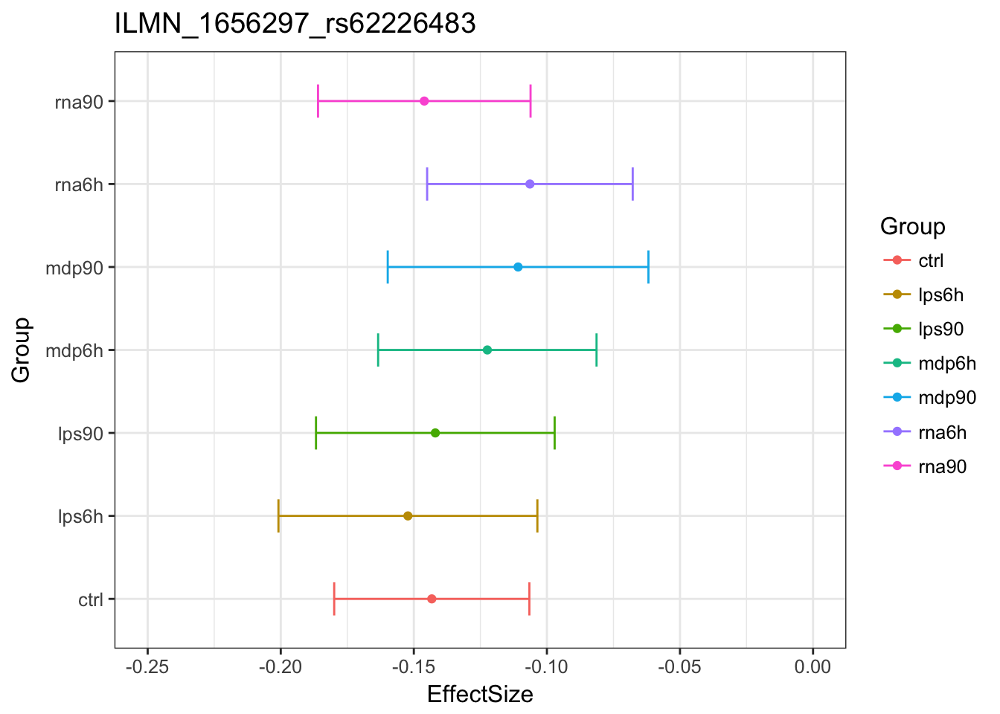

Immune Data Mash Analysis EZ V1 Results
Yuxin Zou
2017-11-15
Last updated: 2018-01-07
Code version: e92eeac
Set up data
library(lattice)
library(ggplot2)
library(colorRamps)
library(mashr)Loading required package: ashrlibrary(corrplot)corrplot 0.84 loadeddata = readRDS('../data/ImmuneQTLSummary.4MASH.rds')
data$max$se = data$max$beta/data$max$z
data$null$se = data$null$beta / data$null$z
K = 10
P = 5
vhat = 1if (vhat == 1) {
V = cor(data$null$z[which(apply(abs(data$null$z),1, max) < 2),])
} else {
V = diag(ncol(data$null$z))
}
mash_data = mashr::set_mash_data(Bhat = as.matrix(data$max$beta),
Shat = as.matrix(data$max$se),
V = as.matrix(V),
alpha = 1)MASH results
# EZ
resEZ = readRDS('../output/ImmuneEZ.V1.center.mash_model.K10.P5.rds')
resEZ$result = readRDS('../output/ImmuneEZ.V1.center.mash_posterior.K10.P5.rds')MASH model fit
The log-likelihood of fit is
get_loglik(resEZ)[1] 3201375Here is a plot of weights learned.
options(repr.plot.width=12, repr.plot.height=4)
barplot(get_estimated_pi(resEZ), las = 2, cex.names = 0.7)
Most of the mass is on the null, PCA1 and equal effects. mash placed 9.7949% of the mixture components weight on data-driven matrices, 5.4262% weight on equal effects matrix.
Here is a visualization for PCA1, which capture 9.1026% mixture component in these data, (via correlation heatmap):
x <- cov2cor(resEZ$fitted_g$Ulist[["ED_PCA_1"]])
x[x > 1] <- 1
x[x < -1] <- -1
colnames(x) <- colnames(get_lfsr(resEZ))
rownames(x) <- colnames(x)
corrplot.mixed(x, tl.pos="d",upper='color',cl.lim=c(0.2,1), upper.col=colorRampPalette(rev(c("#D73027","#FC8D59","#FEE090","#FFFFBF",
"#E0F3F8","#91BFDB","#4575B4")))(40),
tl.cex=1.2)The main pattern captured by this component is that the effect of control is strongly correlated with other treatments. The effects may not equal, but they are strongly correlated, \(\beta_{lpa6h} = d \beta_{ctrl}\).
Next we perform SVD on the PCA 1 based covariance matrix, and plot the top eigen vector.
svd.out = svd(resEZ$fitted_g$Ulist[["ED_PCA_1"]])
v = svd.out$v
colnames(v) = colnames(get_lfsr(resEZ))
rownames(v) = colnames(v)
options(repr.plot.width=10, repr.plot.height=5)
for (j in 1:1)
barplot(v[,j]/v[,j][which.max(abs(v[,j]))], cex.names = 0.7,
las = 2, main = paste0("EigenVector ", j, " for PCA-based covariance matrix"))It captures overall effects of the treatments.
head(get_significant_results(resEZ)) ILMN_1656297_rs62226483 ILMN_1657446_rs35690547 ILMN_1659857_rs5751757
513 632 881
ILMN_1660923_rs116457857 ILMN_1670322_rs2548331 ILMN_1676372_rs10408468
1008 1845 2359 Examples of how mash uses patterns of sharing to inform estimated effect:
Original estimates 
MASHestimates
Here is one example of shinkage:
Original estimates
MASHestimates
The estimated effects are closer to 0.
Pairwise sharing
x <- get_pairwise_sharing(resEZ)
colnames(x) <- colnames(get_lfsr(resEZ))
rownames(x) <- colnames(x)
x <- x[rev(rownames(x)),rev(colnames(x))]
x[lower.tri(x)] <- NA
clrs <- colorRampPalette(rev(c("#D73027","#FC8D59","#FEE090","#FFFFBF",
"#E0F3F8","#91BFDB","#4575B4")))(64)
n <- nrow(x)
options(repr.plot.width=9, repr.plot.height=9)
print(levelplot(x[n:1,],col.regions = clrs,xlab = "",ylab = "",
colorkey = TRUE, at = seq(0.7,1,length.out = 64),
scales = list(cex = 0.5,x = list(rot = 45))))Compare with original paper
eQTLs
Among the 21485 top SNPs, MASH found 5548 to be significant in at least one treatment. We refer to these as the ‘top eQTLs’.
Using MASH, we found 5257 genes with an eQTL in control, 5144 genes with an eQTL in lps6h, 5266 genes with an eQTL in lps90, 5302 genes with an eQTL in mdp6h, 5298 genes with an eQTL in mdp90, 5318 genes with an eQTL in rna6h, 5384 genes with an eQTL in rna90.
In the original paper, they identified 717-1653 genes with an eQTL in each condition. So, we found more genes with an eQTL using MASH.
There are 4792 top eQTLs with significant effects among all treatments.
reQTLs
Find genes having \(\beta_{Trt}\) significantly different from \(\beta_{Ctrl}\), among the top eQTLs. The number in [] is the result from the paper. Note that there are only percentages provided in the paper. Since the number of top eQTLs we found are different, the percentage may not directly comparable.
subset.data = function(data, subset){
data.subset = data
data.subset$Bhat = data$Bhat[subset,]
data.subset$Shat = data$Shat[subset,]
data.subset$Shat_alpha = data$Shat_alpha[subset,]
data.subset
}LPS 6h
eQTL.index.lps6h = get_significant_results(resEZ, conditions = 2)
A.lps6h = rbind(c(1,-1,0,0,0,0,0))
row.names(A.lps6h) = c('Ctrl-lps6h')resEZ.lps6h = resEZ
eQTL.lps6h = subset.data(mash_data, eQTL.index.lps6h)
resEZ.lps6h$result = mash_compute_posterior_matrices(resEZ, eQTL.lps6h, A=A.lps6h, algorithm.version = 'R')
saveRDS(resEZ.lps6h,
paste0('../output/ImmuneEZ.V',vhat,'.center.resEZ.lps6h.K',K,'.P',P,'.rds'))resEZ.lps6h = readRDS(paste0('../output/ImmuneEZ.V',vhat,'.center.resEZ.lps6h.K',K,'.P',P,'.rds'))
length(get_significant_results(resEZ.lps6h))[1] 3053Using MASH, we found 59.35% [17%] of lps 6h eQTLs are reQTLs.
LPS 90
resEZ.lps90 = readRDS(paste0('../output/ImmuneEZ.V',vhat,'.center.resEZ.lps90.K',K,'.P',P,'.rds'))
length(get_significant_results(resEZ.lps90))[1] 2724We found 51.73% [15%] of lps 90 eQTLs are reQTLs.
MDP 6h
resEZ.mdp6h = readRDS(paste0('../output/ImmuneEZ.V',vhat,'.center.resEZ.mdp6h.K',K,'.P',P,'.rds'))
length(get_significant_results(resEZ.mdp6h))[1] 2778We found 52.4% [9%] of mdp 6h eQTLs are reQTLs.
MDP 90
resEZ.mdp90 = readRDS(paste0('../output/ImmuneEZ.V',vhat,'center.resEZ.mdp90.K',K,'.P',P,'.rds'))
length(get_significant_results(resEZ.mdp90))[1] 2493We found 47.06% [9%] of mdp 90 eQTLs are reQTLs.
RNA 6h
resEZ.rna6h = readRDS(paste0('../output/ImmuneEZ.V',vhat,'.center.resEZ.rna6h.K',K,'.P',P,'.rds'))
length(get_significant_results(resEZ.rna6h))[1] 2805We found 52.75% [18%] of rna 6h eQTLs are reQTLs.
RNA 90
resEZ.rna90 = readRDS(paste0('../output/ImmuneEZ.V',vhat,'.center.resEZ.rna90.K',K,'.P',P,'.rds'))
length(get_significant_results(resEZ.rna90))[1] 3632We found 67.46% [3%] of rna 90 eQTLs are reQTLs.
In the paper, they found 3-18% of cis eQTLs in each condition are reQTLs.
Treatment specificity of reQTLs
LPS 6h
reQTL.index.lps6h = get_significant_results(resEZ.lps6h)
A.lps6hTRT = rbind(c(0,1,0,-1,0,0,0),
c(0,1,0,0,0,-1,0))
row.names(A.lps6hTRT) = c('lps6h-mdp6h', 'lps6h-rna6h')resEZ.lps6hTRT = resEZ
reQTL.lps6h = subset.data(eQTL.lps6h, reQTL.index.lps6h)
resEZ.lps6hTRT$result = mash_compute_posterior_matrices(resEZ, reQTL.lps6h, A=A.lps6hTRT, algorithm.version = 'R')
saveRDS(resEZ.lps6hTRT,
paste0('../output/ImmuneEZ.V',vhat,'.center.resEZ.lps6hTRT.K',K,'.P',P,'.rds'))resEZ.lps6hTRT = readRDS(paste0('../output/ImmuneEZ.V',vhat,'.center.resEZ.lps6hTRT.K',K,'.P',P,'.rds'))
length(get_significant_results(resEZ.lps6hTRT))[1] 2615We found 72.88% [32%] lps6h reQTLs are stimulus specific compared with mdp6h, 71.73% [34%] lps6h reQTLs are stimulus specific compared with rna6h.
LPS 90
resEZ.lps90TRT = readRDS(paste0('../output/ImmuneEZ.V',vhat,'.center.resEZ.lps90TRT.K',K,'.P',P,'.rds'))
length(get_significant_results(resEZ.lps90TRT))[1] 2496We found 72.03% [14%] lps 90min reQTLs are stimulus specific compared with mdp 90min, 75% [51%] lps 90min reQTLs are stimulus specific compared with rna 90min.
MDP 6h
resEZ.mdp6hTRT = readRDS(paste0('../output/ImmuneEZ.V',vhat,'.center.resEZ.mdp6hTRT.K',K,'.P',P,'.rds'))
length(get_significant_results(resEZ.mdp6hTRT))[1] 2451We found 64.22% [15%] mdp 6h reQTLs are stimulus specific compared with lps 6h, 77.47% [13%] mdp 6h reQTLs are stimulus specific compared with rna 6h.
MDP 90
resEZ.mdp90TRT = readRDS(paste0('../output/ImmuneEZ.V',vhat,'.center.resEZ.mdp90TRT.K',K,'.P',P,'.rds'))
length(get_significant_results(resEZ.mdp90TRT))[1] 2273We found 69.11% [15%] mdp 90min reQTLs are stimulus specific compared with lps 90min, 71.12% [46%] mdp 90min reQTLs are stimulus specific compared with rna 90min.
RNA 6h
resEZ.rna6hTRT = readRDS(paste0('../output/ImmuneEZ.V',vhat,'.center.resEZ.rna6hTRT.K',K,'.P',P,'.rds'))
length(get_significant_results(resEZ.rna6hTRT))[1] 2500We found 64.71% [21%] rna 6h reQTLs are stimulus specific compared with lps 6h, 80.57% [45%] rna 6h reQTLs are stimulus specific compared with mdp 6h.
RNA 90
resEZ.rna90TRT = readRDS(paste0('../output/ImmuneEZ.V',vhat,'.center.resEZ.rna90TRT.K',K,'.P',P,'.rds'))
length(get_significant_results(resEZ.rna90TRT))[1] 2832We found 65.39% [38%] rna 90min reQTLs are stimulus specific compared with lps 90min, 61.45% [29%] rna 90min reQTLs are stimulus specific compared with mdp 90min.
Time point specificity of reQTLs
LPS 6h
A.lps6hTime = rbind(c(0,1,-1,0,0,0,0))
row.names(A.lps6hTime) = c('lps6h-lps90')resEZ.lps6hTime = resEZ
resEZ.lps6hTime$result = mash_compute_posterior_matrices(resEZ, reQTL.lps6h , A=A.lps6hTime, algorithm.version = 'R')
saveRDS(resEZ.lps6hTime,
paste0('../output/ImmuneEZ.V',vhat,'.center.resEZ.lps6hTime.K',K,'.P',P,'.rds'))resEZ.lps6hTime = readRDS(paste0('../output/ImmuneEZ.V',vhat,'.center.resEZ.lps6hTime.K',K,'.P',P,'.rds'))
length(get_significant_results(resEZ.lps6hTime))[1] 2390We found 78.28% [45%] lps6h reQTLs are time point specific compared with lps90min.
LPS 90
resEZ.lps90Time = readRDS(paste0('../output/ImmuneEZ.V',vhat,'.center.resEZ.lps90Time.K',K,'.P',P,'.rds'))
length(get_significant_results(resEZ.lps90Time))[1] 1997We found 73.31% [36%] lps 90min reQTLs are time point specific compared with lps6h.
MDP 6h
resEZ.mdp6hTime = readRDS(paste0('../output/ImmuneEZ.V',vhat,'.center.resEZ.mdp6hTime.K',K,'.P',P,'.rds'))
length(get_significant_results(resEZ.mdp6hTime))[1] 2041We found 64.22% [40%] mdp 6h reQTLs are time point specific compared with mdp 90min.
MDP 90
resEZ.mdp90Time = readRDS(paste0('../output/ImmuneEZ.V',vhat,'.center.resEZ.mdp90Time.K',K,'.P',P,'.rds'))
length(get_significant_results(resEZ.mdp90Time))[1] 1787We found 71.68% [38%] mdp 90min reQTLs time point specific compared with mdp 6h.
RNA 6h
resEZ.rna6hTime = readRDS(paste0('../output/ImmuneEZ.V',vhat,'.center.resEZ.rna6hTime.K',K,'.P',P,'.rds'))
length(get_significant_results(resEZ.rna6hTime))[1] 2179We found 77.68% [64%] rna 6h reQTLs are time point specific compared with rna 90min.
RNA 90
resEZ.rna90Time = readRDS(paste0('../output/ImmuneEZ.V',vhat,'.center.resEZ.rna90Time.K',K,'.P',P,'.rds'))
length(get_significant_results(resEZ.rna90Time))[1] 2405We found 66.22% [32%] rna 90min reQTLs are time point specific compared with rna 6h.
Session information
sessionInfo()R version 3.4.3 (2017-11-30)
Platform: x86_64-apple-darwin15.6.0 (64-bit)
Running under: macOS High Sierra 10.13.2
Matrix products: default
BLAS: /Library/Frameworks/R.framework/Versions/3.4/Resources/lib/libRblas.0.dylib
LAPACK: /Library/Frameworks/R.framework/Versions/3.4/Resources/lib/libRlapack.dylib
locale:
[1] en_US.UTF-8/en_US.UTF-8/en_US.UTF-8/C/en_US.UTF-8/en_US.UTF-8
attached base packages:
[1] stats graphics grDevices utils datasets methods base
other attached packages:
[1] corrplot_0.84 mashr_0.2-4 ashr_2.1-27 colorRamps_2.3
[5] ggplot2_2.2.1 lattice_0.20-35
loaded via a namespace (and not attached):
[1] Rcpp_0.12.14 compiler_3.4.3 git2r_0.20.0
[4] plyr_1.8.4 iterators_1.0.9 tools_3.4.3
[7] digest_0.6.13 evaluate_0.10.1 tibble_1.3.4
[10] gtable_0.2.0 rlang_0.1.6 Matrix_1.2-12
[13] foreach_1.4.4 yaml_2.1.16 parallel_3.4.3
[16] mvtnorm_1.0-6 stringr_1.2.0 knitr_1.17
[19] rprojroot_1.2 grid_3.4.3 rmarkdown_1.8
[22] rmeta_2.16 magrittr_1.5 backports_1.1.2
[25] scales_0.5.0 codetools_0.2-15 htmltools_0.3.6
[28] MASS_7.3-47 assertthat_0.2.0 colorspace_1.3-2
[31] labeling_0.3 stringi_1.1.6 lazyeval_0.2.1
[34] munsell_0.4.3 doParallel_1.0.11 pscl_1.5.2
[37] truncnorm_1.0-7 SQUAREM_2017.10-1This R Markdown site was created with workflowr